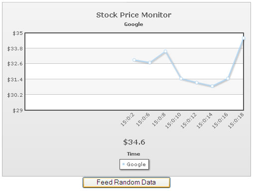

Data-streaming charts > Feeding data using JavaScript |
The data-streaming charts allow you to feed data to the chart using JavaScript too, instead of real-time data provider page. The format of data feed, however, should be the same as that outputted by real-time data provider page. |
| How to feed data using JavaScript? |
| To feed data using JavaScript, you'll first need to enable the registerWithJS flag as under: |
| var chart1 = new FusionCharts("../Charts/RealTimeLine.swf", "ChId1", "500", "350", "0", "1"); |
Now, you can use the feedData(strData) method to feed data to the chart. Here, strData is a string value which should contain the data in exactly the same format as that provided by real-time data provider page. Shown below is an example: |
<HTML> //We need to create a querstring format incremental update, containing //Feed it to chart. |
In the above code, we're:
When you now view this example, you'll get something as under (image taken after button was clicked a few times): |
|  |